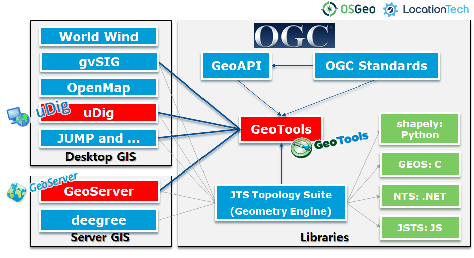
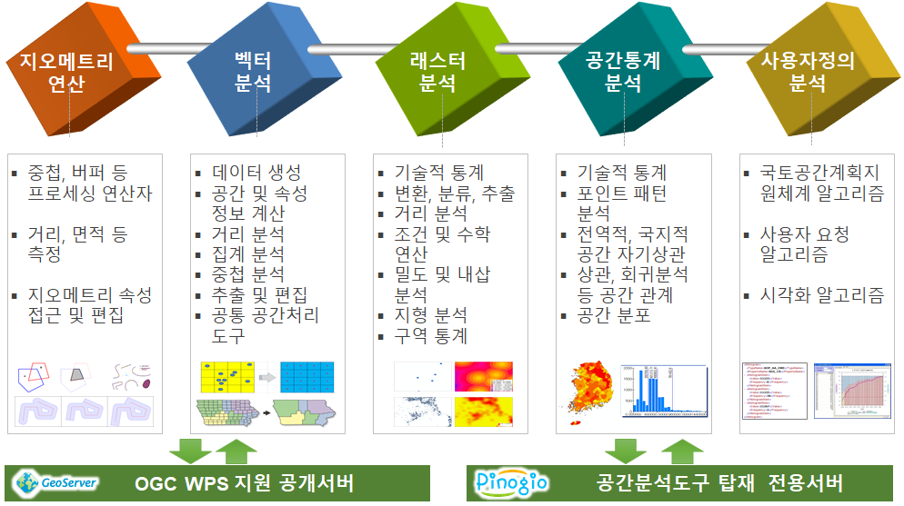
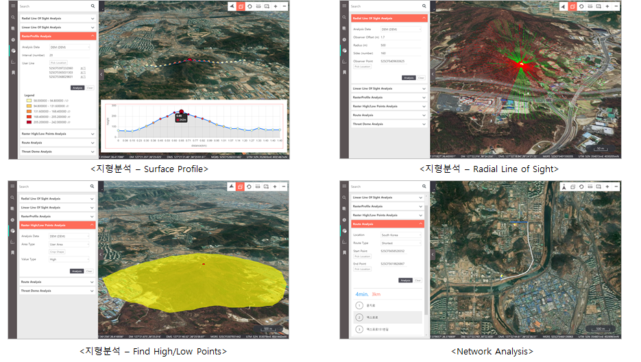
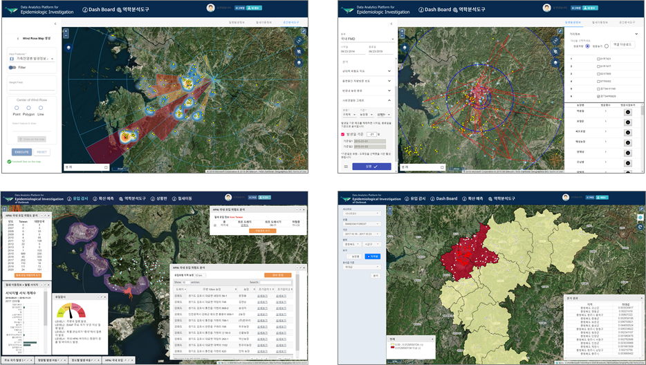
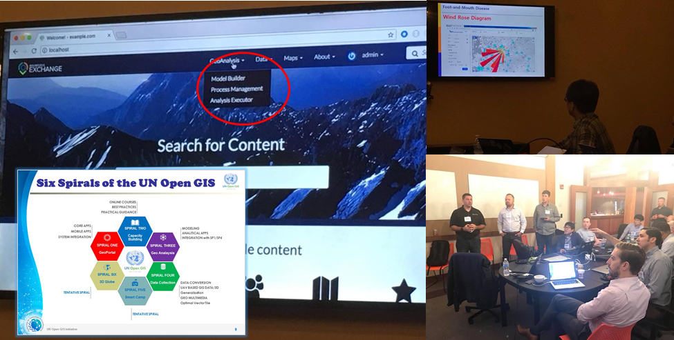
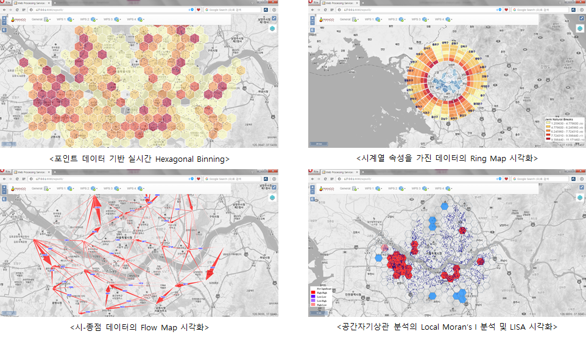

OpenGXT¶
기반 오픈소스 GIS 프로젝트¶
OpenGXT는 Java 기반 GeoTools(OSGeo) 라이브러리를 확장하여 개발되었으며, GeoServer (OSGeo)에서는 OGC WPS 서비스로, uDig(LocationTech)에서는 Processing Toolbox 플러그인으로 배포됩니다.
주요 공간분석 프로세스¶
OpenGXT의 공간분석기능은 Geometry, 벡터, 래스터, 공간통계, 사용자 정의 알고리즘으로 구성되어 있으며, 2020년 현재 190여 개 분석 알고리즘이 배포되어 있습니다.
라이선스¶
GeoTools process-spatialstatistics : LGPL. License guide
GeoServer gs-wps-spatialstatistics : GPL
참여하기¶
OpenGXT는 소스코드에서부터, 지역화, 배포에 이르기까지 모든 과정이 공개되어 있으며, GitHub, Transifex, SourceForge 등 오픈소스를 지원하는 플랫폼을 활용합니다.
활용사례¶
2018년 NIPA가 발주하고 국방지형정보단이 수요자인 [오픈소스 기반 군 공간정보 포털 시스템]입니다. 가이아쓰리디와 망고시스템이 수행했고 군에서 사용하는 지형분석 및 경로분석을 적용하였습니다.
2018년 한국교통안전공단이 발주한 [교통안전정보관리시스템(TMACS) 개선사업]에서 기존 데스크톱 기반의 교통사고분석시스템을 웹 기반 분석시스템으로 전환했습니다.

2017년 동물질병 발병, 농장, 축산차량 이동정보 기반 역학조사 분석 시스템 및 2019년 인공지능기술을 활용한 고병원성 조류인플루엔자 국내 유입 감지 및 확산 대응 시스템에 적용하였습니다.
UN의 오픈소스 GIS 플랫폼 도입 프로젝트인 UN OpenGIS Initiative에서 Working Group 3 Geo-Analysis 부문에 참여하고 있으며 현재 분석기능 개발과 지원을 수행하고 있습니다.
데모 프로젝트
